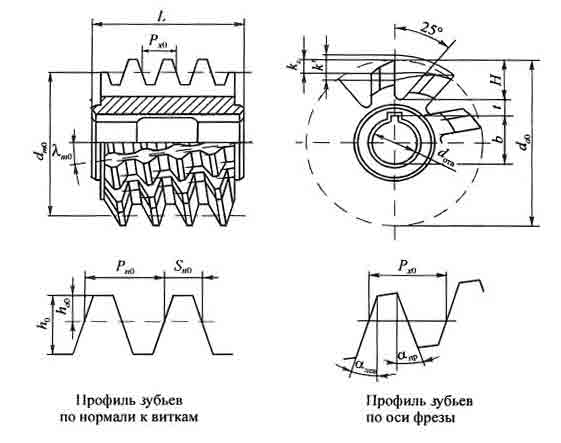

Червячные зуборезные фрезы - это многолезвийные инструменты реечного типа, работающие по методу обката. Они изготавливаются на базе червяка, в котором для образования зубьев прорезаны стружечные канавки. При пересечении с витками червяка они образуют переднюю поверхность в виде рейки. Задние углы на зубьях создаются, как правило, затылованием, что облегчает переточку фрезы в процессе эксплуатации. Так как рейки находятся на витках червяка, то при вращении последнего режущие кромки зубьев получают не только движение вокруг оси фрезы, но и непрерывное смещение вдоль ее оси. Таким образом, червячная фреза является инструментом с конструктивным движением обката или инструментом с бесконечной рейкой, находящейся в зацеплении с нарезаемым колесом.
Способ фрезерования зубчатых колес имеет широкое распространение в промышленности благодаря своей универсальности, высокой производительности и точности. Одной и той же фрезой данного модуля можно нарезать колеса с различным числом зубьев, что значительно сокращает число типоразмеров фрез. Благодаря непрерывности процесса обката достигаются высокая производительность и точность колес по шагу. Обработка ведется на специальных зубофрезерных станках, обеспечивающих вращение фрезы и заготовки вокруг своих осей и движение подачи фрезы вдоль оси нарезаемого колеса.
По точности червячные фрезы изготавливаются классов ААА и АА (прецизионные) А, В, С и Д (общего назначения) и предназначены для нарезания колес 5-9-й степеней точности.
Принцип работы червячных фрез. Процесс зубонарезания червячной фрезой подобен процессу зацепления двух зубчатых колес. При этом червяк можно рассматривать как колесо с винтовыми зубьями, число которых равно числу заходов. Оси червяка и колеса скрещиваются в пространстве.
В процессе зубонарезания фреза и колесо вращаются вокруг своих осей, а движение подачи вдоль оси колеса осуществляется перемещением суппорта станка, причем с самого начала зубья фрезы врезаются на полную глубину впадины между зубьями колеса. Вращение колеса и фрезы строго скоординированы с движением подачи. За один оборот фрезы колесо поворачивается вокруг оси на a/z1 оборота, где а - число заходов фрезы; z1 - число зубьев нарезаемого колеса. Все зубья однозаходной фрезы участвуют в формировании профиля впадины зубьев колеса, которые получаются как огибающая различных положений зубьев фрезы. При работе многозаходных фрез за один оборот фрезы одновременно обрабатывается число впадин, равное числу заходов.
Известно, что при фрезеровании инструмент с заготовкой имеет прерывистый контакт, поэтому при зубонарезании это приводит к появлению на боковых поверхностях зубьев колеса огранки (fогр), а по дну впадины - волнистости (fволн). Хотя эти отклонения от теоретически точного профиля малы, тем не менее они сказываются на плавности при работе зубчатой передачи. Поэтому при изготовлении точных колес необходимы дополнительные операции, такие как шевингование, зубошлифование.
Исходя из требования теории зацепления, теоретически точная червячная зуборезная фреза должна быть изготовлена на базе исходного эвольвентного червяка. Однако на практике это создает большие затруднения, как при изготовлении самого червяка, так и при затыловании зубьев и контроле их профиля. Дело в том, что профиль зубьев эвольвентного червяка в осевом сечении, в котором осуществляется радиальное затылование, имеет криволинейную форму. Из-за этого невозможно обеспечить его постоянство при переточках фрезы. Для осевого же затылования боковых поверхностей зубьев необходимы специальные станки, которые, однако, не могут обеспечить одновременно затылование зубьев по вершинным и боковым режущим кромкам. Невозможно также обеспечить точный контроль профиля зубьев из-за отсутствия необходимых приборов.
Поэтому на практике червячные фрезы проектируют и изготавливают на базе архимедовых и конволютных червяков, максимально приближенных к эвольвентному червяку и лишенных указанных недостатков.
В основе боковых поверхностей витков указанных выше червяков лежат линейчатые винтовые поверхности, т.е. поверхности, образованные винтовым движением отрезка прямой относительно оси вращения.
Архимедова винтовая поверхность образуется отрезком прямой, пересекающейся с осью под углом (а). В частном случае при = 90° образуется поверхность коноида, примером которого является винт с прямоугольной резьбой или передняя поверхность зубьев червячной фрезы, образуемая при фрезеровании стружечных канавок с передним углом = 0°.
В осевом сечении архимедовой винтовой поверхности находится прямая - образующая этой поверхности, а в сечении, перпендикулярном к оси, - архимедова спираль.
Архимедов червяк, используемый для изготовления зуборезных фрез, представляет собой резьбовое изделие с трапециевидной резьбой, которая может быть образована резцом с передней гранью, установленной в осевой плоскости, т.е. проходящей через линию центров (б).
В этой же плоскости производится радиальное затылование зубьев фрезы резцами с прямолинейными режущими кромками, а также контроль профиля с высокой точностью специальными приборами.
Другим примером использования архимедовой винтовой поверхности является поверхность витков метрической резьбы с углом образующей к оси, равным = 60°.
Как показал анализ, при замене эвольвентного червяка архимедовым достигается наименьшая погрешность профиля нарезаемых колес по сравнению с конволютным червяком. Поэтому чистовые червячные фрезы изготавливаются на базе архимедовых червяков.
Конволютная винтовая поверхность образуется отрезком прямой, которая, совершая винтовое движение относительно оси, все время остается касательной к некоему цилиндру, называемому направляющим цилиндром (в).
В сечении этой поверхности плоскостью, касательной к направляющему цилиндру, лежит прямая - образующая, а в сечении, перпендикулярном к оси, - удлиненная эвольвента. Из множества конволютных червяков для изготовления червячных фрез берут такой червяк, который в сечении, перпендикулярном к виткам, дает прямолинейный профиль, подобный профилю исходного контура рейки. Такой червяк можно нарезать резцом, устанавливаемым в плоскости N-N, или дисковой фрезой с прямолинейными режущими кромками, ось которой параллельна плоскости N-N (c). Контроль профиля зубьев у таких фрез производится также в этой плоскости с помощью шаблона на просвет, что из-за наличия субъективного фактора снижает точность измерения. Так как при замене эвольвентного червяка конволютным также возникают погрешности, причем большие, чем при замене архимедовым червяком, то на базе конволютных червяков изготавливают черновые и получистовые червячные фрезы. В то же время использование дисковых фрез при изготовлении таких червяков значительно снижает трудоемкость нарезания витков.
Эвольвентная винтовая поверхность является частным случаем конволютной винтовой поверхности, когда образующая прямая касательна не только к направляющему цилиндру, но и к винтовой линии на нем, образованной винтовым перемещением точки контакта образующей и цилиндра (d). В качестве направляющего цилиндра принимается основной цилиндр. В сечении этой поверхности плоскостью, перпендикулярной к оси, лежит эвольвента, а в сечении плоскостью, касательной к цилиндру, - прямая.
Особенностью эвольвентной винтовой поверхности является то, что это единственная из линейчатых винтовых поверхностей, развертывающаяся на плоскости, т.е. ее можно обрабатывать плоскостью инструмента, например плоскостью шлифовального круга. Другие линейчатые поверхности - неразвертывающиеся, поэтому их можно получать только инструментом с прямолинейной режущей кромкой.
Теоретически изготовление точного эвольвентного червяка также возможно, если два резца с прямолинейными режущими кромками, наклонными к оси, будут расположены выше (для левой стороны витка) и ниже (для правой) оси центров на расстоянии, равном радиусу основного цилиндра (е). В этих плоскостях режущие кромки совпадают с образующими левой и правой винтовых поверхностей червяка. Однако при таком расположении резцов условия резания неблагоприятны из-за появления вибраций. Поэтому на практике эвольвентные червяки получают из конволютных, у которых витки образуются фрезерованием дисковыми фрезами с последующей шлифовкой по боковым сторонам профиля плоской стороной шлифовального круга. Контроль профиля червяков производится наложением лекальной линейки под углом к оси. При этом линейка должна совпадать без просвета с контролируемым профилем а плоскость линейки должна быть касательна к основному цилиндру. Точность такого измерения, однако, невысока из-за влияния субъективного фактора.
После нарезания витков червяка следующим этапом в изготовлении фрезы является фрезерование стружечных канавок, которые образуют переднюю поверхность зубьев и пространство для размещения стружки. Их ширина также должна быть достаточной для помещения затылующего резца.
Канавки могут быть прямыми, параллельными оси червяка или винтовыми, перпендикулярными направлению витков червяка. Фрезы с прямыми канавками проще в изготовлении и при переточке затылованных зубьев. Они также более предпочтительны при конструировании сборных фрез. Их недостаток - появление отрицательных передних углов на одной из боковых режущих кромок. С точки зрения равномерности процесса фрезерования вариант с прямыми канавками более предпочтителен, так как зубья фрезы вступают в контакт с заготовкой последовательно, а не одновременно, как у фрез с винтовыми канавками.
Стандартные фрезы изготавливают с винтовыми канавками. Передние углы при этом варианте одинаковы на обеих боковых режущих кромках и равны нулю, если на вершинной кромке γ в = 0°.
По ГОСТ 9324-80 (в ред. 1992 г.) число зубьев (стружечных канавок) z0 рекомендуется брать в зависимости от модуля и типа фрезы. Так, например, для m = 1...25 z0 = 8...16.
После нарезания зубьев фрезы производится их затылование для создания задних углов на режущих кромках. Оно осуществляется резцами или гребенками (m <= 5) и шлифовальными кругами после термообработки фрез.
Затылование по вершинам зубьев и дну впадины между зубьями производится резцами с режущей кромкой, параллельной оси, аналогично радиальному затылованию дисковых фасонных фрез от кулачка с величиной падения затылка kZ.
Наибольшую сложность представляет затылование боковых задних поверхностей зубьев фрезы.
Сведения по размерам и углам профиля на рабочих чертежах фрезы принято указывать следующим образом. Для конволютных червячных фрез показывают линейные и угловые параметры профиля в нормальном сечении к виткам, т.е. приводят размеры контура исходной инструментальной рейки. Для архимедовых фрез с винтовыми стружечными канавками показывают два сечения - нормальное и осевое. В первом указывают линейные размеры исходного контура рейки, а во втором - осевой шаг Рх и углы профиля αлев и αправ.
При переточке фрезы с затылованными зубьями по передней поверхности из-за наличия задних углов ее диаметр уменьшается, m0 увеличивается, осевой шаг Рх0 уменьшается. Это приводит к появлению дополнительной погрешности при нарезании зубчатых колес.
Длина фрезы L должна обеспечить полное профилирование зубьев нарезаемого колеса и резание без перегрузки крайних зубьев фрезы. Ориентировочно, без учета угла наклона оси фрезы, при зацеплении с деталью, минимальную длину фрезы L1 можно определить:
L1 = 2 · ( r 2a1 - r 2f1 )½
Рабочую длину фрезы берут несколько больше, а именно:
L = 2 · ( r 2a1 - r 2f1 )½ + n · Px0 .
Последнее слагаемое в уравнении - это добавка на передвижку фрезы вдоль оси в процессе эксплуатации. Коэффициент n = 1...16 берется в зависимости от величины модуля. При этом наибольшие значения п должны соответствовать меньшим модулям. Необходимость в осевой передвижке вызвана тем, что зубья фрезы в процессе резания нагружены неравномерно. Наибольшая нагрузка приходится на крайние с торца зубья, и они изнашиваются быстрее. Поэтому с целью повышения срока службы фрезы по мере износа ее зубьев производят несколько осевых передвижек.
С обоих торцов фрезы делают цилиндрические буртики шириной 4...6 мм и диаметром (l,5...1,7)dотв. Они служат для контроля радиального и торцового биений фрезы на оправке зубофрезерного станка.
Из уравнения следует, что с увеличением числа зубьев и, соответственно, диаметра нарезаемого колеса, длина фрезы увеличивается. Например, для колеса m = 5 мм диаметром 5000...6000 мм длина фрезы должна быть около 300 мм. Изготовление таких фрез затруднительно. Длина фрезы может быть уменьшена, если нагрузку на крайние зубья распределить на другие, рядом расположенные. Для этого с входной стороны фрезы делают заборный конус длиной Lз.к, равной двум шагам, и с углом 2φ = 18...30°. Это существенно повышает стойкость фрезы.
На вершинной режущей кромке с целью удобства изготовления и переточки фрез чаще всего передний угол γ в = 0, а задний угол, получаемый затылованием, α в = 10...12°. Черновые фрезы с целью облегчения процесса резания могут изготавливаться с γ в = 10... 15°.
На боковых режущих кромках передние и задние углы значительно меньше по величине, чем на вершинной кромке, и далеки от оптимального значения с точки зрения стойкости.
Так, для стандартной червячной фрезы при α 0 = 20°, γ В = 12°, α В = 10...12° имеем γ N = 2°30', α N = 2°30'...3°.
Цели совершенствования: повышение производительности и срока службы, упрощение технологии изготовления и эксплуатации фрез.
Так как червячные фрезы весьма сложны в изготовлении и дорогостоящи, то применение новых инструментальных материалов, таких как быстрорежущие стали с повышенным содержанием кобальта и ванадия, твердые сплавы и композиты, дает значительный экономический эффект за счет увеличения скорости резания и стойкости инструмента.
Фрезы твердосплавные и оснащенные композитом применяются довольно редко из-за низкой надежности и высокой стоимости. Наибольший эффект они обеспечивают при обработке хрупких материалов, например изделий из высокопрочных чугунов, пластмасс, а также закаленных сталей.
На стойкость фрез существенно влияет принятая схема резания, определяющая нагрузку на зубья. У стандартных фрез, например, активно используется 15...20 % длины режущих кромок по периметру. При этом наибольший объем срезаемого металла приходится на вершинные режущие кромки, особенно тех зубьев, которые первыми вступают в резание. Эти зубья быстрее изнашиваются и оказывают определяющее влияние на период стойкости инструмента. Этот недостаток стремятся изменить применением червячных фрез с заборным конусом, а также фрез с дифференцированными схемами резания. Фрезы с заборным конусом более эффективны при диагональном методе фрезерования, когда суппорт с фрезой одновременно перемещается в двух направлениях: вдоль оси фрезы и вдоль оси колеса. При этом значительно увеличивается число огибающих резцов и снижается шероховатость обработанных поверхностей зубьев колеса и самое главное - зубья фрезы изнашиваются равномерно по всей ее длине.
При одновременной работе вершинной и боковых режущих кромок зуба фрезы срезаемый слой имеет сложную форму, что приводит к повышению степени его деформации, температуры резания и интенсивности износа инструмента. Для создания более благоприятных условий резания на всех режущих кромках размеры зубьев изменяют по высоте и ширине через один зуб. В результате срезаются более толстые и короткие стружки раздельно вершинными и боковыми режущими кромками. Стойкость таких фрез существенно возрастает.
Червячные фрезы с затылованными зубьями хотя и получили наибольшее применение, однако имеют ряд недостатков, снижающих их стойкость: операция затылования сложна и трудоемка, требует изготовления специальных кулачков и инструмента, оставляет следы удара на режущих зубьях; задние углы на боковых режущих кромках малы, что снижает стойкость фрез. Поэтому появилось много вариантов конструкций сборных фрез с вставными и поворотными рейками, у которых процесс затылования заменен шлифованием по окружности и по винтовым боковым поверхностям.
Один из эффективных способов повышения производительности при зубофрезеровании является применение многозаходных червячных фрез. При работе такой фрезы за один ее оборот вокруг оси колесо поворачивается на a/z оборота, где а - число заходов, и каждый виток с расположенными на нем режущими зубьями обрабатывает свою впадину, т.е. нарезание зубьев идет быстрее в а раз. Однако при этом уменьшается число профилирующих зубьев на одном витке фрезы, что приводит к ухудшению качества обработанной поверхности зубьев и снижению точности профилирования из-за значительного увеличения угла подъема витков т0. Поэтому на практике такие фрезы применяются с числом заходов не более трех и только при черновом зубонарезании. Часто профиль зуба у них делают модифицированным с оставлением припуска под шевингование.
В массовом производстве крупномодульных колес используют различные конструкции фрез с уменьшенным углом профиля до α r = 15° при угле зацепления α 0 = 20°, которые обеспечивают более высокую производительность и стойкость за счет перераспределения нагрузки между режущими кромками зубьев фрезы и увеличения числа профилирующих режущих кромок. Так как при этом снижается шероховатость поверхности, их можно делать многозаходными.
Недостатком таких фрез является то, что они теряют универсальность, т.е. превращаются в специальные, пригодные только для обработки определенного колеса с заданным числом зубьев.